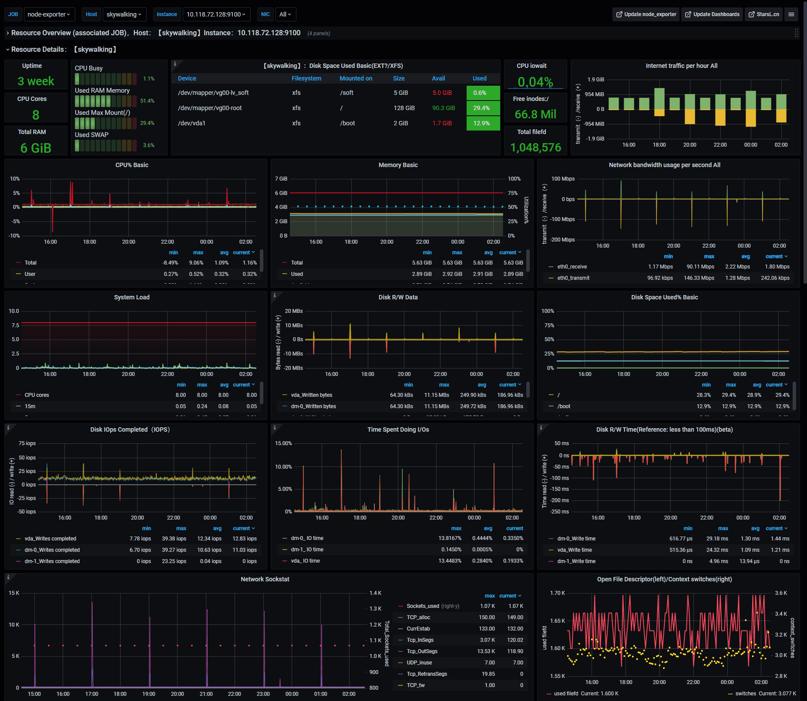

Hunting Before Day Zero
By Ryan LaBouve
$ whoami
Ryan LaBouve
- Founder of Startup.Security
- Disaster Recovery
(storms not hard-drives)
Startup.Security
- Security the tools, technologies, companies that are building the future (we want)
- Helping series A,B,C startups kickstart security
- Security Observabilty Research
My Background
Any Why this topic is interesting to me
- üëá Software engineer
- üëá SRE (DevOps+SysAdmin)
- üëâ Security Observability & Strategy
Modus Operindi Mei
üßë‚Äçüéì First princples up
(Not big tools down)üèïÔ∏è Bazzar > üè∞ Cathedral
(OSS > Closed source)üé® Shameless Iteration
(We're going to be wrong a lot, but learn each timeToday's Agenda
Understanding fundamental signals from Linux gives us insight to compromise.
-
STORY MODE
running into compromise -
Signals of compromise
philosophy and methodology -
Signals in the wild
Tactics & perspective
What you'll get out of this?
Beginner / Intermediate Practitioner
Better understanding of the signals available from Linux and how they can lead to situational system awareness (which can help you hunt vulns on your system).
Intermediate / Advanced Practitioner
Review fundamental signals produced by linux systems and push to use them to understand potential and novel vulnerabilities on your hosts.
I: STORY MODE: RUNNING INTO SIGNS OF COMPROMISE
How to accidentally
discover a zero-day
Zero-day
A vulnerability that has not been publicly disclosed.
- No patch
- No way to track
Client:
Client goal: stand up firewall on a microservice
Critical service
Service cannot go down
Startups in hyper-growth
Growth is prioritized over everything (e.g. security)
Microservices a popular choice for companies in hyper-growth mode
Microservices growth mode math!
I can...i. "divide big problems into smaller problems
ii. "Hire 1 teams to solve 1 problem"
iii. 1000 problems? 1000 teams! QED

Microservices primer
Do one small thing!
North-South vs East West traffic
Common for large companies to have 100's of microservices
Infra at hyperion
We've simplified the infra a bit.
Infra at hyperion
Traffic Flow
Traffic patterns for RBAC service
EW traffic to other services,

RBAC service at hyperion

Technical Review of RBAC service
Node API: /api/v1/authorize?user_id=1&resource_id=2&action=3
Redis cache (Key Value store) (on box)
Direct connection to user database (off box)
What could happen if we compromised this
poison Redis cache
Exfil the data
Move laterally
How are we going to bring a firewall up?
Identify everyday traffic
Identify maintence traffic
Identify deploy traffic
(Exercise 1)Our First Signals: SYN / SYN-ACK's
Image of syn and syn-ack in TCP
We'll focus on TCP over UDP, ICMP, Other traffic
Successful 3-way handshake

Wireshark

TCPDump
sudo tcpdump 'tcp[tcpflags] & tcp-syn != 0'

LibPCAP
Libpcap is a library for capturing and processing network packets in real-time
eBPF
eBPF is a virtual machine that runs in the kernel and allows you to write programs that can be attached to various kernel hooks.

LibPCAP vs eBPF
Our solution:
agent to track SYN / SYN-ACK
Spits out counts to prom
transforms output to firewall
Demo of tool
TODO: create demo of tool
I/iii. STORY MODE: A TWIST IN TRAFFIC
After monitoring SYN / SYN-ACK's for a week
Noticed something weird
Unexpected E-W traffic
No reason RBAC service should be talking to email service
SUS: Tracking traffic
No reason RBAC service should be communicating to email service
Novel vulnerabilty
Doing data exfil
II. SIGNALS OF COMPROMISE: PHILOSOPHY AND METHODOLOGY
Small signal can reveal quite a bit about a system
Classical approach for signals of compromise
- Behavioral analysis
- Signature based detection (e.g. file names or metadata)
- Data-based learning (ML/AI/If statements)
- Threat Intelligence databases
Monitoring vs Observability
Monitoring -> I can collect all the events in a system
Observability -> I can understand the system based on certain outputs
"Fundamental signal"
A granular observable event on a system. E.g. system call.
Event
| Pros |
collection size, composability, expressiveness |
| Cons |
requires legwork (e.g. forensics, guessing), system knowledge |
II. SIGNALS OF COMPROMISE: PHILOSOPHY AND METHODOLOGY // (SoC::Big_Signals)
SoC // Big Signals
A more complex and specific signal that's composed of several factors
"Circumstance"
| pros | context comes along for the ride, forensics included |
| cons | resource intensive, storage intensive, fragile |
Example using a big signal
Detecting Cobalt strike (C2)
file_modifications_include ('pipe\msagent_', \
'pipe\lsarpc_', 'pipe\samr_', ...)
https://redcanary.com/threat-detection-report/threats/cobalt-strike/
Rundll32.exe to span SQL Server Client Configuration Utility
"identifies instances of rundll32.exe spawning the SQL Server Client Configuration Utility (cliconfg.exe). We often see this pattern of process execution when Cobalt Strike leverages DLL Search Order Hijacking as a method of UAC bypass."
parent_process == rundll32.exe
&&
process == cliconfg.exe
https://redcanary.com/threat-detection-report/threats/cobalt-strike/
process == cmd.exe
&&
command_line_includes ('/(?i)echo\s+[0-9a-f]{11}\s+\>\;?\s+\\\\\.\\pipe\\[0-9a-f]{6}/.match')
The above regular expression will match on the following example what of using GetSystem may look like via a Cobalt Strike beacon:
C:\Windows\system32\cmd.exe /c echo 92d8cc45954 >; \\.\pipe\446b3c
https://redcanary.com/threat-detection-report/threats/cobalt-strike/
II. SIGNALS OF COMPROMISE: PHILOSOPHY AND METHODOLOGY // small-signals
and describe it using small signals
C2's, what do?
- Data exfiltration
- Encrypt data for ransom
- Lateral movement
- Priv Esc
- Deploying unwanted software (e.g. malware, miners, etc)
- Sabotage
C2's, what do?
Zooming in to data exfiltration
(i.e. moving your files)And let's note, your files can be moved in very sneaky ways

What small signals do we have to help us detect C2 based activity?
| üóÇÔ∏èFile system | üï∏Ô∏èNetwork |
Syscalls are the key.
This is the API any interaction happens with network and files at
To explore with small signals successfully we need:
- Snoop syscalls => eBPF
- way to collect them => prometheus
- way to vizualize them => grafana
- way to query/compose them => prometheus
eBPF (Snooping Syscalls)
Run user code in the kernal
What many "big tools" (e.g. CrowdStrike Falcon) uses to monitor endpoints
Prometheus (Collect Metrics)
Counting system calls
Grafana (Vizualization)
Can be used to visualize eBPF data
Prometheus Query Language
II/ii. SIGNALS OF COMPROMISE: FILE ACCESS
Primer on files: definition
Files are the building blocks of linux systems
"Linux treats everything as a file (including files, directories, devices, processes)"
Primer on files: details
File permissions
File paths
File hierarchy
File I/O (what we care about)
So if someone wants to move your files, what are they going to have to do?
| open(): | This system call is used to open an existing file or create a new one. It returns a file descriptor, a non-negative integer that represents an open file within the process. The open() call takes arguments specifying the file path, access mode (read, write, or both), and permissions (if creating a new file). Common access modes include O_RDONLY (read-only), O_WRONLY (write-only), and O_RDWR (read and write). |
| close() | This call closes an open file by releasing the associated file descriptor. It is essential to close files after usage to prevent resource leaks and ensure that data is flushed to the storage device. |
| read() | This system call reads data from an open file into a buffer. It takes a file descriptor, a buffer pointer, and the number of bytes to read as arguments. The read() call returns the number of bytes actually read or a negative value if an error occurs. When the end of the file is reached, read() returns 0. |
| write() | This call writes data from a buffer to an open file. It takes a file descriptor, a buffer pointer, and the number of bytes to write as arguments. The write() call returns the number of bytes actually written or a negative value if an error occurs. |
| lseek() | This system call is used to change the file offset of an open file. It allows for random access to a file's contents by specifying the new offset position relative to a reference point (SEEK_SET for the start of the file, SEEK_CUR for the current position, or SEEK_END for the end of the file). lseek() returns the resulting offset location or a negative value if an error occurs. |
|
stat(), fstat(), and lstat() |
These calls retrieve information about a file, such as its size, permissions, and timestamps. stat() and lstat() take a file path as an argument, while fstat() takes a file descriptor. lstat() differs from stat() in that it retrieves information about a symbolic link itself rather than the file it points to. |
| rename() | This system call renames a file or moves it to a different directory. It takes the old file path and the new file path as arguments. |
| unlink() | This call removes a file from the file system. It takes the file path as an argument. The file's storage space is released when all processes that have the file open close it. |
|
fsync() and fdatasync() |
These calls ensure that all buffered data associated with an open file is written to the storage device. fsync() synchronizes both file data and metadata, while fdatasync() synchronizes only file data. |
Example: File Opens
Collect: File Opens
Vizualize: File Opens
Compose: File Opens
II/iii. SIGNALS OF COMPROMISE: NETWORK ACCESS
Primer on networking in Linux
(Long story very very very short)| Application | UI for creating message, formatting, or encryption then the transport layer. |
| Transport | (If TCP) establishes a connection via "three-way handshake". |
| Segmentation | Once the connection is established, TCP divides the message into smaller chunks called segments. Each segment includes a header containing essential information such as the source and destination port numbers, sequence numbers, and checksums to ensure reliable and ordered transmission. |
| IP Layer | The segments are then passed to the Internet Protocol (IP) layer. IP adds its own header to each segment, creating IP packets. The header includes the source and destination IP addresses, the time-to-live (TTL) value, and other information required for routing. |
| Data link | The IP packets are handed over to the data link layer, where they are encapsulated into frames. These frames contain additional headers and trailers, such as the source and destination MAC addresses, which are needed for communication within the local network. |
| Physical layer | Wires and NICs |
| Routing | Your router, which acts as the default gateway, forwards the packets to the next hop in the network based on the destination IP address. This process is repeated across multiple routers and networks until the packets reach the destination computer's network. |
| Reception | Once the packets arrive at the destination network, they travel through the data link and physical layers, reaching the destination computer's network interface. (More happens on the host) |
| socket() | Creates a new socket, returning a file descriptor that refers to it. Takes the address family (e.g., AF_INET for IPv4 or AF_INET6 for IPv6), socket type (e.g., SOCK_STREAM for TCP), and protocol as arguments. |
| bind() | Assigns a local address (IP and port) to the socket. Often used by servers to listen for incoming connections on a specific port. Takes the socket file descriptor and the local address as arguments. |
| connect() | Initiates a connection to a remote server for a client application. Takes the socket file descriptor and the destination address (IP and port) as arguments. |
| listen() | Configures a socket to listen for incoming connection requests from clients. Typically used by servers after bind(). Takes the socket file descriptor and a backlog value (the maximum number of pending connections) as arguments. |
| accept() | Accepts an incoming connection request from a client, creating a new socket specifically for that connection. Takes the listening socket file descriptor and returns a new file descriptor for the accepted connection. |
| recv() | Receives data from the connected remote socket. Takes the socket file descriptor, a pointer to a buffer for the received data, the buffer size, and optional flags as arguments. |
| read() | A general file I/O system call that can be used to receive data from a connected remote socket. Takes the socket file descriptor, a pointer to a buffer for the received data, and the buffer size as arguments. |
| select() or poll() | Monitors multiple file descriptors, including sockets, for events such as data availability for reading, readiness for writing, or exceptional conditions. Useful for managing multiple connections in a single-threaded application. |
| getsockopt() and setsockopt() | Retrieves or sets socket options, respectively. These system calls allow for adjusting socket settings, such as timeouts, buffer sizes, or enabling/disabling specific features. |
| shutdown() | Shuts down part or all of a full-duplex connection on a socket. Takes the socket file descriptor and a flag indicating which part of the connection to shut down (e.g., SHUT_RD for reading, SHUT_WR for writing, or SHUT_RDWR for both) as arguments. |
| close() | Closes the socket connection and releases the associated file descriptor. Should be called after the connection is no longer needed to free resources and ensure proper cleanup. |

- socket(): Creates a new socket for communication. This call returns a socket file descriptor that is used for subsequent operations.
- bind(): (Optional) Binds the socket to a specific local address and port. This is not always necessary, as the operating system will assign an ephemeral port automatically if connect() or listen() is called without a prior bind().
- connect() (for the client side): Initiates a connection to the remote endpoint by sending a SYN packet. The operating system chooses an ephemeral local port if bind() was not called earlier. The client then waits for the server to respond with a SYN-ACK packet.
- listen() (for the server side): Indicates that the socket is willing to accept incoming connection requests. The server socket is set to listen for incoming SYN packets from clients.
- accept() (for the server side): Blocks and waits for a connection request from a client. When the server receives a SYN packet, it responds with a SYN-ACK packet. The accept() call returns a new socket file descriptor for the established connection with the client.
connect() (for the client side): Initiates the connection to the remote endpoint by sending a SYN packet and waits for a SYN-ACK packet in response.
Collect: SYN SYN-ACK
Vizualize:
Compose: File Opens
III. CONCLUSIONS IN THE WILD
The bigger and more abstract our tools get, the more we lose touch with what are systems are doing
We are not beholden to $$$ to get insights to our system
Earlier I said relying on big signals is a cat and mouse game
Trying to break new vulns using small signals is a ghost hunt
Happy hunting